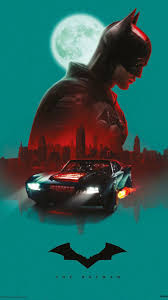

Batman
O Batman (inicialmente chamado o Bat-Man) também conhecido pelas alcunhas Homem-Morcego, Cavaleiro das Trevas, Cruzado Encapuzado, Maior Detetive do Mundo,[7] é um personagem fictício e super-herói encapuzado da editora norte-americana DC Comics, criado pelo desenhista Bob Kane e pelo escritor Bill Finger, aparecendo pela primeira vez na história em quadrinhos Detective Comics#27 (maio de 1939) com o nome "o Bat-Man".
A identidade secreta do Batman é Bruce Wayne, um bilionário americano, playboy, magnata de negócios, filantropo e dono da corporação Wayne Enterprises. Depois de testemunhar o assassinato dos seus pais enquanto criança, Wayne jurou vingança contra os criminosos — um juramento moderado por um ideal justiça. Wayne, então, treina física e intelectualmente e cria uma persona inspirada no morcego para combater o crime.[8] Batman opera na cidade fictícia de Gotham City, sendo ajudado por seu mordomo Alfred Pennyworth, o comissário da polícia Jim Gordon e aliados vigilantes como Robin. Ao contrário da maior parte dos super-heróis, Batman não tem superpoderes; assim, na sua guerra contra o crime, utiliza seu intelecto de gênio, sua perícia em artes marciais e sua destreza física — bem como sua riqueza, que lhe garante um enorme arsenal de armas e equipamentos de última geração. Uma grande variedade de vilões compõem a galeria de inimigos do Batman, incluindo o Coringa, seu nêmesis.
Bruce Wayne
Bruce Wayne se mostra perante a sociedade como um playboy irresponsável e superficial que vive da fortuna herdada dos pais (conquistada quando os pais de Bruce investiram em Gotham antes de a cidade tornar-se uma grande metrópole) e dos lucros obtidos pelas Empresas Wayne, uma grande empresa no ramo da tecnologia de ponta. Contudo, Wayne também é conhecido por suas contribuições para caridade, especialmente através da Fundação Wayne, fundação dedicada a ajudar vítimas de crimes e prevenir que pessoas tornem-se criminosas. Essa personalidade de Bruce Wayne foi inventada por ele para evitar que alguém desconfiasse de seu alter-ego, às vezes fingindo-se bobo e egoísta para que ninguém o descubra. Bruce Wayne deixou claro que considera manter sua identidade secreta prioridade máxima, chegando a ficar perto da morte várias vezes para evitar mostrar suas habilidades em público como Batman.
Batman
Bruce Wayne criou o Batman para causar medo no submundo de Gotham e para defender os inocentes. O uniforme e a maneira como age quando o usa tem o objetivo de intimidar seus adversários. Enquanto Bruce Wayne é despreocupado e irresponsável, Batman é frio, determinado e implacável. Além do uniforme e da personalidade, Bruce Wayne também altera sua voz significativamente quando torna-se Batman, tanto para disfarçar como para intimidar. Batman costuma atuar apenas à noite (e não durante o dia, como no seriado dos anos 1960), imitando os hábitos dos morcegos. Em histórias mais recentes, surgiu a ideia de Batman como uma lenda urbana.
Batman vulgo melhor héroi! Sem poderes mas com preparo derrota qualquer um
-
